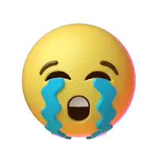
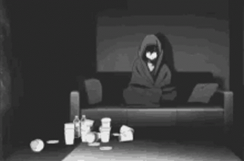
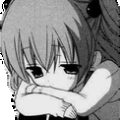
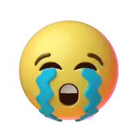
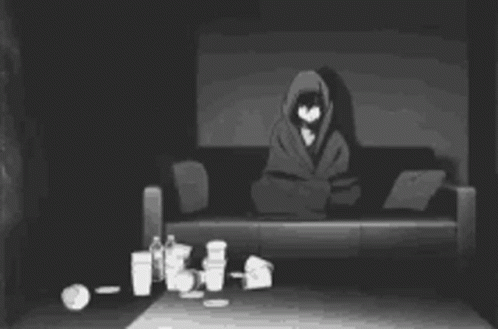
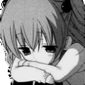
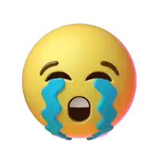
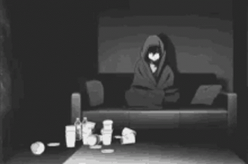
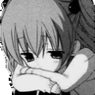
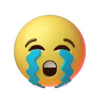
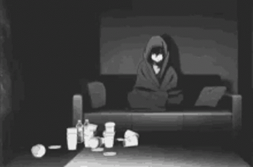
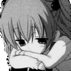

 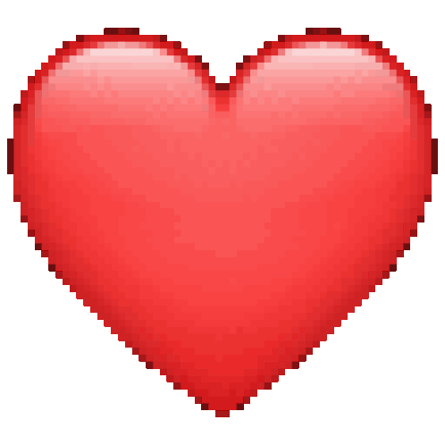
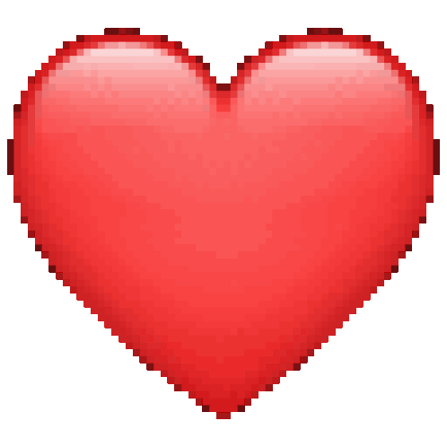
Escrevo esta carta com o coração apertado, mas com a certeza de que tudo o que vivemos merece ser dito uma última vez. É difícil resumir em palavras o tamanho do sentimento que tenho por você, porque ele mora nos detalhes, nas pequenas coisas do dia a dia que agora parecem gigantes na minha memória.
Eu vou sentir falta de tudo. Do seu cabelo lindo, que eu tanto admirava. Da forma como você implica comigo — algo que, no fundo, eu sempre gostei, porque era a nossa dinâmica. Vou sentir falta até daquele seu jeito único de chegar da academia e perguntar se a bunda cresceu, esperando minha aprovação (que você sempre teve).
Sinto falta do seu lado carinhoso, da forma como você sempre me acolheu e cuidou de mim quando eu estava mal; você sempre foi meu porto seguro. Mas sinto falta também da nossa rotina leve: do tempo que passamos com nosso filho, vendo ele crescer entre nós, dos nossos lanches (que não eram poucos, né?) e daquela sua comidinha que eu amo tanto.
São as coisas simples que mais doem agora. Lembro da liberdade que tínhamos, das suas "porquices" que só mostravam o quanto estávamos à vontade um com o outro. Lembro de quando tomávamos banho juntos, sem segundas intenções, só pela companhia, jogando conversa fora enquanto a água caía e eu esfregava suas costas e espremia suas espinhas kkkk. Lembro de te fazer cosquinhas mesmo sabendo que você odiava, só para te ver rir e brigar comigo ao mesmo tempo. E sinto saudade até de ficarmos deitados assistindo a filmes e séries, mesmo aqueles péssimos, porque a companhia era o que importava.
Eu amo cada detalhe em você. Seus olhos, sua boca, e a conexão incrível que tínhamos no sexo. Eu te amei mais do que amei o meu próprio ser.
Reconheço minhas falhas e me sinto muito mal por ter esquecido as coisas que você me pedia, às vezes com tanta facilidade. Nunca foi por falta de amor, mas sei que isso pesou.
Por isso, termino esta carta num cruzamento de caminhos. Sei que o momento é de despedida e isso é muito sofrido para mim. Mas, se houver ainda uma faísca, se você me der uma chance, eu prometo dedicar minha vida a te fazer a mulher mais feliz do mundo, corrigindo onde errei.
Porém, se a sua decisão já estiver tomada e você realmente não quiser mais, eu vou aceitar. Eu deixo você ir embora, porque te amar também é querer te ver bem, mesmo que longe de mim. Só peço que, nesse caso, a gente mantenha o respeito por tudo o que construímos.